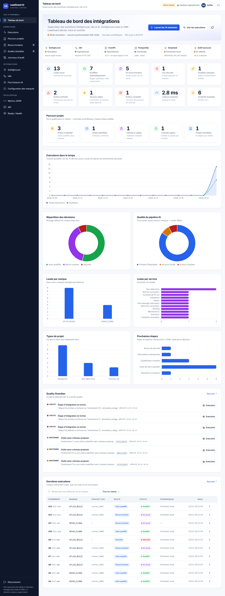
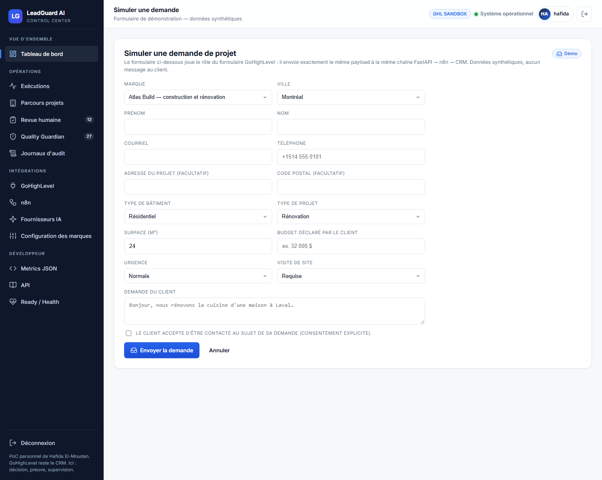
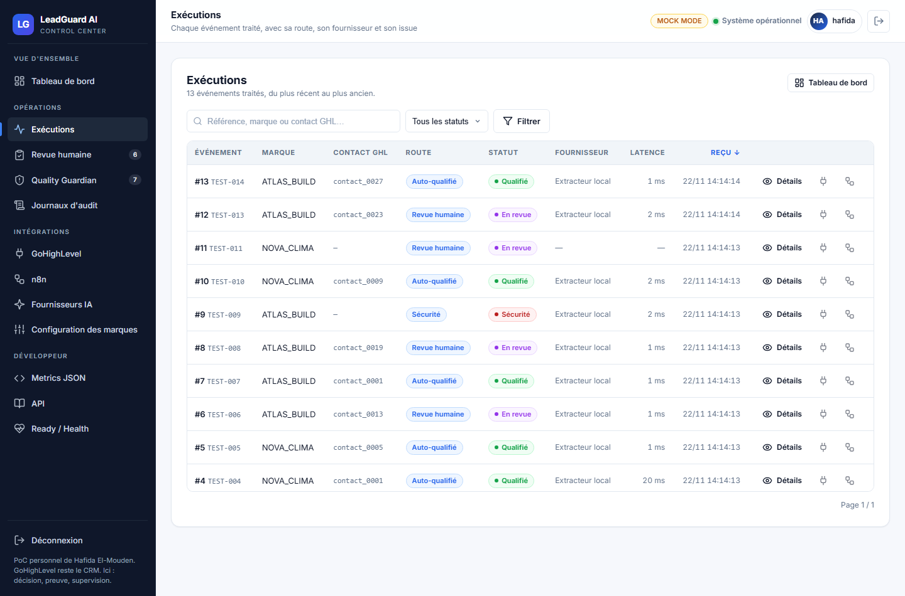
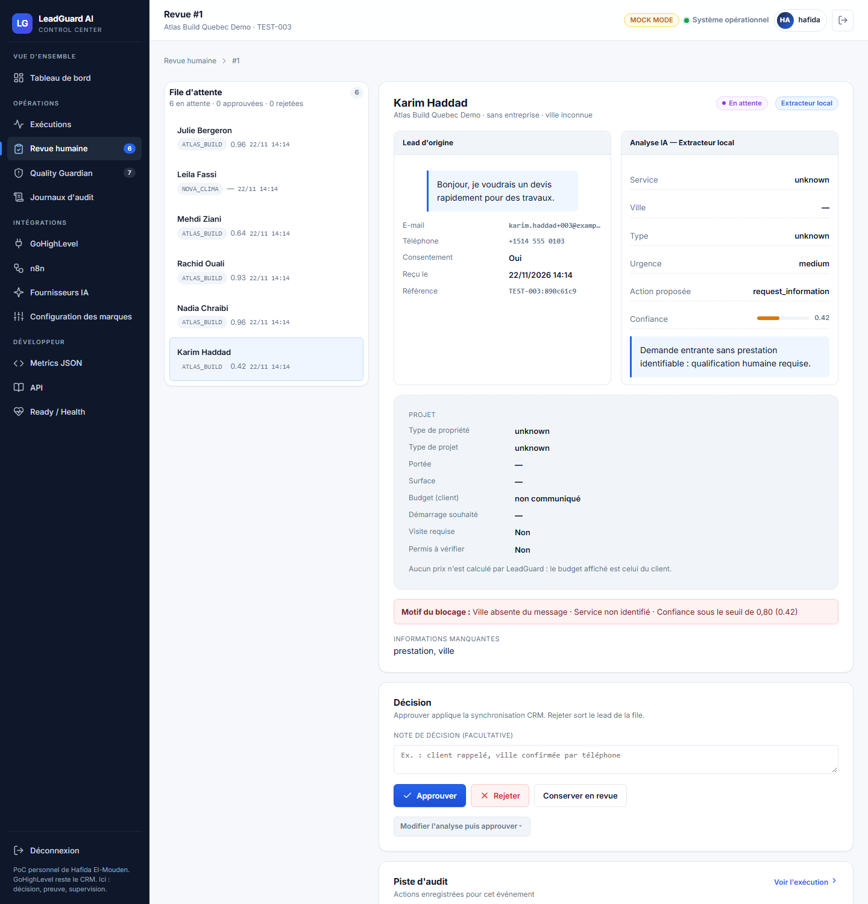
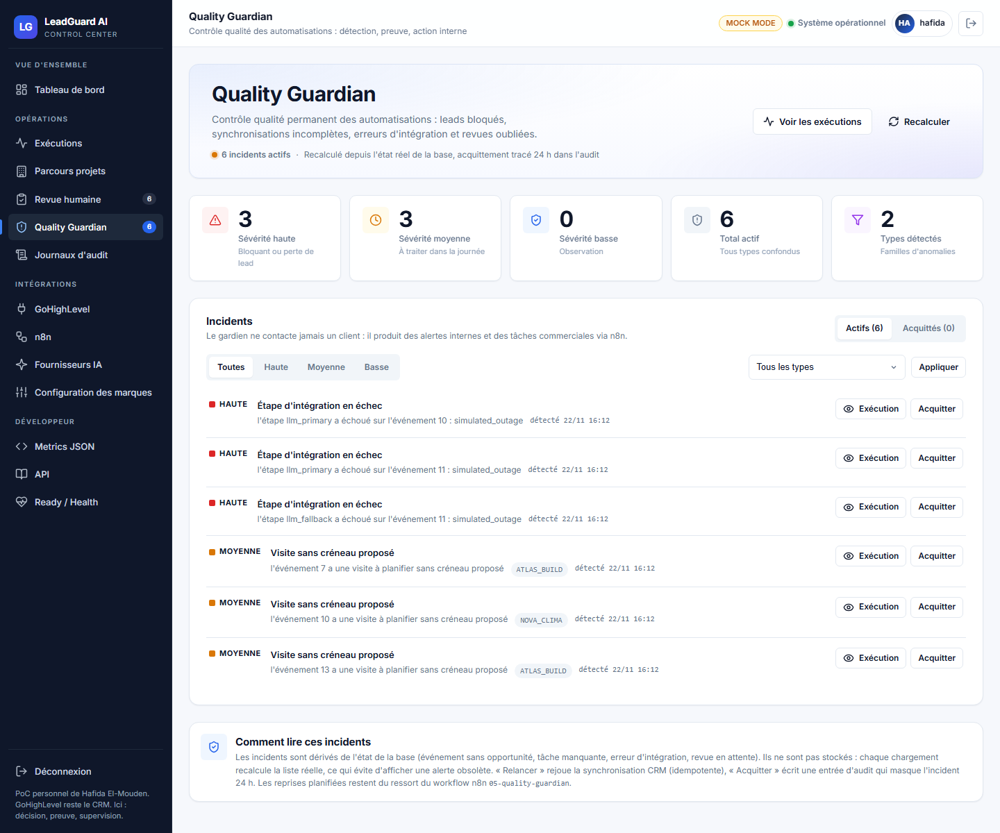
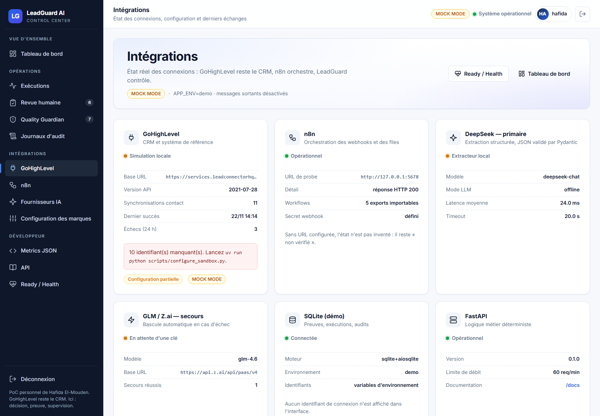
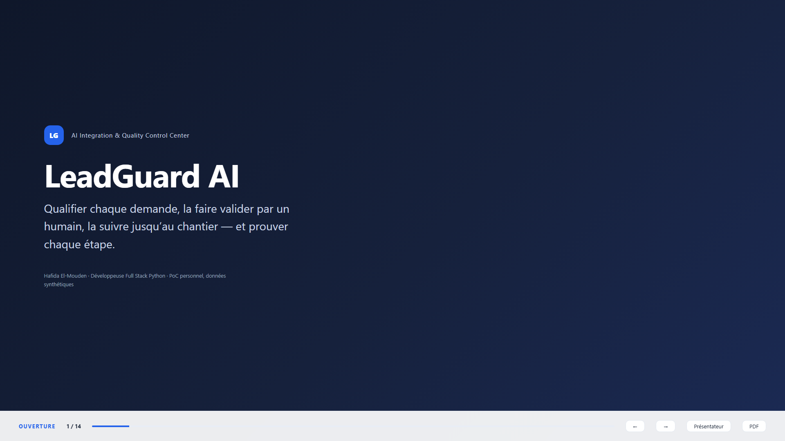

Qualification des demandes, revue humaine, parcours projet, Quality Guardian.
Les captures viennent de l'application en fonctionnement, avec les données
synthétiques de démonstration et un sous-compte GoHighLevel de test.
Ce sont des captures fixes, pas une démonstration interactive : l'application
s'exécute avec son API et sa base. La démonstration en direct se fait en
partage d'écran.

Tableau de bord
Santé des dépendances en haut (GoHighLevel, n8n, base, extracteur local), puis
l'activité : volumes par jour, répartition des décisions, files d'attente.
Chaque tuile interroge le service — aucune valeur n'est décorative.

Nouvelle demande
Le formulaire envoie le même payload qu'un formulaire GoHighLevel : validation,
moteur de règles, synchronisation CRM. Un refus de validation nomme le champ
fautif au lieu d'un message générique.

Exécutions
Chaque demande traitée laisse une trace : route décidée, score, statut,
informations manquantes. C'est la piste d'audit du parcours.
Parcours projet
Visite, estimé, approbation, transfert vers l'atelier. Une seule action est
proposée à la fois, et elle dépend de l'état — pas de bouton qui laisse faire
n'importe quoi.

Revue humaine
Les dossiers douteux arrivent avec leurs motifs et la lecture du modèle ;
la décision humaine est comparée à la proposition, et conservée.

Quality Guardian
Les incidents portent sur le processus : visite en retard, estimé sans
validation, contrat sans transfert. Chacun est rattaché à une règle explicite.

Intégrations
Ce qui est réel et ce qui est simulé, au même endroit : GoHighLevel connecté,
n8n opérationnel, mode démonstration affiché. Une intégration non configurée
se voit au lieu de se deviner.

Le dossier
Quatorze slides qui racontent la même histoire : le problème, l'architecture,
la démonstration, les limites. Ouvrir le dossier.